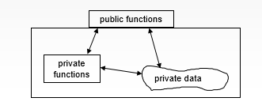
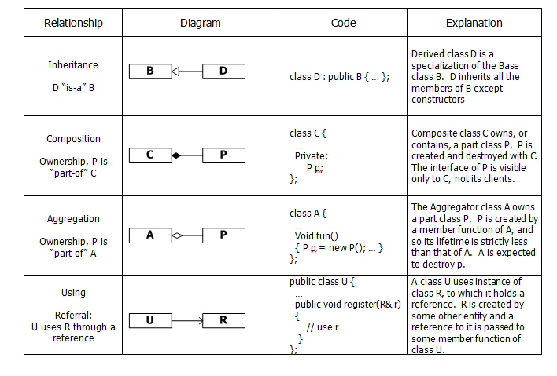
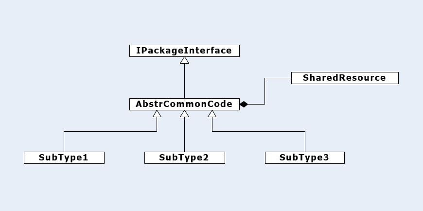
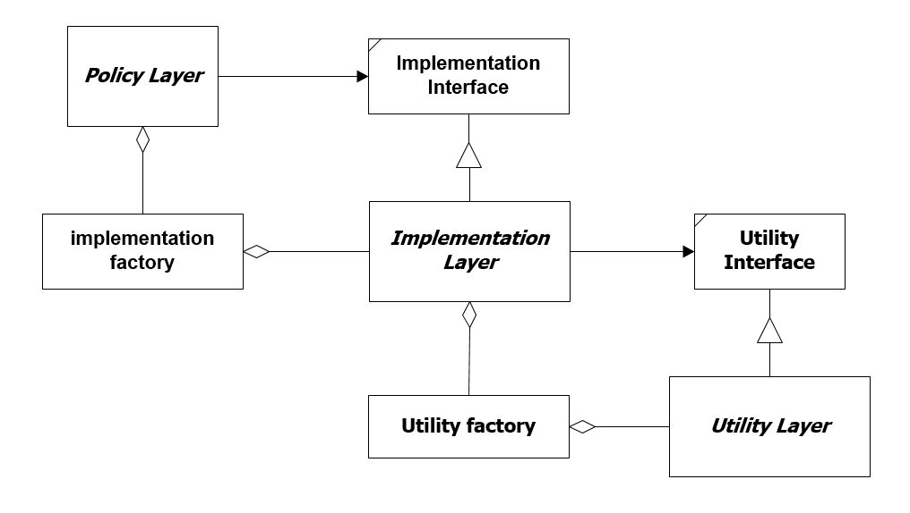

Programming languages tend to emphasize some style of constructing code. There are many styles that
have been and are currently used to develop programs, for example: Structured1,
Functional2, Generic3, and Object Oriented programming4.
Goals:
The goals of object oriented design are to support program abstractions by encapsulating implementation details in class instances, provide composability through
class relationships, and support extensibility through inheritance and paramaterization using C++ templates or generics with C# and Java.
Encapsulation:
;
Figure 1 - Encapsulation
The primary function of many solution side5 classes is to manage some collection of state. Encapsulation ensures that member state is always
under the control of the managing class and only that class. Classes support encapsulation by providing access controls.
Private methods and member data are accessible to every member of the class but inaccessible to clients and derived classes.
Protected methods and member data are also accessible to derived classes, but not to clients.
Public methods provide an interface for clients and derived classes. We don't make member data public.
The private member data of a class is entirely under the control of its methods and cannot be changed by any other class or function.
This ensures that member data is, for correctly designed classes, always in a valid state. Providing protected member data weakens
encapsulation since an incorrectly designed derived class can transform a correctly designed base's member data to an invalid state.
Class Relationships:
Classes support inheritance, composition, aggregation, and using relationships.
Figure 2 - Class Relationships

Inheritance:
When a derived class D inherits from a base B it
inherits all of the member functions and member data of the base class except, when using C++, for constructors, assignment operators, and destructors.
The derived class may add additional methods and member data.
Composition:
composition is a strong ownership relation. A composed part P becomes an integral part of the composer C. P is constructed at the same time as C and shares
its lifetime. C++ supports composition with every user-defined type as well as types defined by the language. Java and C# have two kinds of types, value types
and reference types. Composition of value types is supported by those languages, but composition of reference types is not supported.
Aggregation:
Aggregation is a weak ownership relation. An aggregated part P may be instantiated by its aggregator A, but instantiation is not guaranteed to occur as that requires
code in the aggregator to explicitly create an instance on the heap. The aggregating class A composes a handle to the part P, but the instance of P itself
resides on the heap from the time of its instantiation. And so, the lifetime of P is less than the lifetime of the A. C++ supports aggregation of
user-defined types and types defined by the language, placing instances on the native heap. Java and C# support aggregation for reference types and for
value types if they are boxed, which wraps them with an instance of a reference type on the managed heap.
Using:
Using relationships provide access via references to instances of types R that are not owned by the using class U. C++, Java, and C# support using relationships
in the same way. References to R are passed to an instance of U via a method argument.
Substitution:
All Object Oriented Programming (OOP) languages support substitution:
Liskov Substitution Principle:
"Functions that use pointers or references statically typed to some base class must be able to use objects of classes derived from the base through
those pointers or references without any knowledge specialized to the derived classes."6
Substitution is a very powerful mechanism in OOP for building flexible software. For example:
In 2005 I designed a rule-based parser for students to use for code analysis projects and also for research that a doctoral
advisee, Murat Gungor, and I were working on. Rules are detectors of specific syntactic constructs and derive from an IRule interface. Each rule has one or more
associated actions that derive from an IAction interface. The parser is just a container for rules and rules are containers for their actions. Parser passes token sequences
obtained from an associated scanner to each rule. When a rule matches it invokes its actions to save results for later use.
What makes this useful is that we can add new rules at any time without affecting any of the other analysis code. This flexibility comes about through
Liskov Substitution. The parser holds IRule pointers to its rules; and methods called on the IRule interface bind to the derived methods overridden by
the concrete rule classes. Liskov Substitution guarantees us that an IRule pointer can bind to an instance of a derived rule class.
Sharing:

Figure 3 - Sharing
Inheritance provides for sharing of interfaces, implementations, shared types, and shared instances. This is illustrated in Figure 3.
The IPackageInterface is inherited by AbstrCommonCode and its derived classes.
The abstract class AbstrCommonCode provides shared method code
and also sharing of the SharedResource. Each derived class inherits the shared method implementations and an instance of SharedResource that is unique to each
derived class.
If the SharedResource is declared static in AbstrCommonCode, then each derived class shares the same instance of SharedResource.
Interface Segregation:
When a class has many users it is tempting to add public methods in the class to support operations that may be required by only one or two client
applications. If the class remains popular its public interface may become very large with only a few methods used by any one client.
This causes problems when the class has to change:
Interface Segregation Principle
"Clients should not be forced to depend upon interfaces they do not [fully] use." "If we have to change an interface we affect even those clients
that do not use the features we change"6.
Changing an interface may cause the code of each client to require new layout even if they
don't use the changed parts. That means they must be recompiled, which for large systems, may be a non-trivial process. We can avoid this by factoring
the interface into several parts. Each client can then use multiple inheritance to bind to just the features they need. Often, to avoid multiple inheritance,
we may factor not only the
interface but the clients as well. That's what was done in the parser. The parsing interface was separated into IRule, IAction,
ITokenCollection, and IBuild. The rules and actions were factored as well into small managable parts.
Dependency Inversion:

Figure 4 - Dependency Inversion
It is common for a software design to factor into a policy layer of classes that implement the program's obligations, a lower implementation layer that provides
solution artifacts like data structures, formatters, analyzers, and the like. The implementation layer will probably bind to classes in utility libraries developed
for the application domain. If bindings are to concrete classes in each layer the design becomes very brittle. A change in the bottom layer may cause changes to
propagate up to the very top layers.
Dependency Inversion Principle:
"High level components should not depend upon low level components. Instead, both should depend on abstractions." "Abstractions should not depend on details.
Details should depend upon the abstractions."6
If we use interfaces, the text of the upper layer for all invocations into a lower layer will depend on the interface of the lower layer, not on its concrete classes. If we use
object factories, the text of the upper layer for all instantiations of lower level concrete classes will depend on the interface of the object factory
not on the declarations of the specific objects being created. This makes the upper layer's compilation independent of anything that may happen in the lower layer
provided the interfaces don't change.
Patterns:
In CSE687 - Object Oriented Design, we discussed several patterns from the "Design Patterns" book by Erich Gamma, Richard Helm, Ralph Johnson, and John Vlissides. The book contains a catalog
of 23 patterns that each pose a design problem and show how to use Object Oriented Design principles to address the problem. These are not intended to be
recipes that you apply by rote. Rather each presents a sound design using classes and class relationships to illustrate interesting design ideas. You are expected
to bend the ideas from the catalog to the situations you encounter in your own designs.
Each of the examples I've presented here have elements of one or more of the design patterns but don't apply the exact solution from the pattern. The parser
uses elements of the Builder and strategy patterns. The Message-Passing Communication System uses a mediator similar to the
Mediator Pattern.
Where I don't use a recognizable deriviative of a pattern most of my designs are informed by the ideas developed in the pattern discussions.
The course
CSE687 - Object Oriented Design is the first part of a two part story. The second part unfolds in
CSE776 - Design Patterns.
Structured programming uses global functions assembled into packages to represent a program's structure and behavior.
The C programming language provides facilities for structured programming exclusively.
Functional programming attempts to bring the rigor of mathematics to program development. Initially based on the lambda calculus,
functional languages like Haskell and Erlang use pure functions that have no side effects and accept and return other functions
as part of their operation. State in functional programs is immutable with loops implemented through recursion.
Generic programming defines classes and functions using type parameters that can be instantiated with concrete types at the time
an application is built. Java generics and C++ templates support this programming style.
Object Oriented Design is based on the use of classes and class relationships to structure programs. In C++ a class may use, compose,
or aggregate any other type and inherit from any non-primitive type, whether provided by the language or defined by a user.
In Managed languages like C# and Java types are segregated into value types which are copy-able and reference types that are not.
Value types and handles to reference types live in their program's set of stack frames while all instances of reference types live
in the program's managed heap. Reference types cannot compose other reference types. They aggregate them, e.g., they compose a
handle to the reference type which points to the handle's instance in the managed heap. They may inherit any single type that is not sealed
and not primitive. Java and C# do support multiple inheritance of interfaces.
We categorize packages as "application side" or "solution side" depending on whether they focus on meeting
the requirements of their program or some lower-level supporting role. Solution side classes are very often
constructed to be reusable in other programs by giving them flexiblity through template parameterization or inheritance hooks.
Application side classes are far less often reusable as they focus on the obligations of one specific program.
Robert Martin wrote a series of white papers, now hosted on his blog, which present the principles discussed here and others as well.
Here's a link to one of his variations on these principles and related topics: Principles.